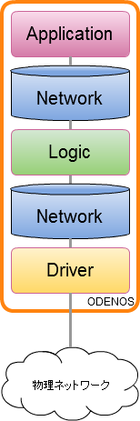

これまでのネットワーク
 |
|
|
SDN制御フレームワークの紹介 デモ OpenFlowソフトウェアスイッチの紹介 |
この発表は個人的な物で仕事や所属等とは関係ありません。 |
SDN(Software Defined Networking)とは、ソフトウェアによって仮想的なネットワークを作り上げる技術全般を言います。
JPNIC
|
|
...のはず
|
|
| ちょっと... |
...こんなの 0 から作れないorz
|
SDNは低コストと言われているが、コントローラー開発が高コスト
SDNはおいしくないのか？ |
ODENOS is a network orchestration framework for controlling multi-layer, multi-domain or multi-vendor networks.
ODENOS enables programmers to easily design a SDN orchestrator as an arbitral combination of four types of objects, Network, Driver, Operator and Application.
odenos
ODENOS (Object DEfined Network OS) は
|
|  |
|
|
４つのLogicを用意
|
Aggregating an entire network into a single logical node
Slicing a network into multiple virtual networks with same topology but isolated name spaces
Combining multiple network domains into a single network instance
Integrate multiple network layers into a single network instance
VLANマッピングコントローラーのコンポーネント構成(イメージ)
http://o3project.github.io/odenos/
CPU: Intel x64 servers (with compatible)
Memory: 2GB 以上
OS: Ubuntu 14.04
JAVA / Python / Ruby
https://github.com/o3project/odenos/tree/develop/doc/api/index.md
https://github.com/o3project/odenos/wiki/handson/ODENOS-handson.pdf
「ネットワークを一変させるかもしれない」と言われていたが...
Lagopusリリース |
Lagopus switch is a high-performance software OpenFlow 1.3 switch.
lagopus
|
汎用サーバーでOpenFlowネットワークが構築可能 |
https://lagopus.github.io/
http://www.lagopus.community/cms/
https://www.facebook.com/groups/802489076486217/
/
#